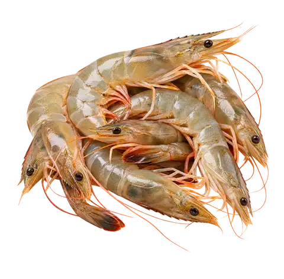
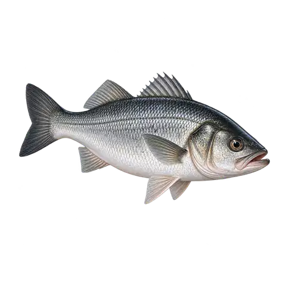
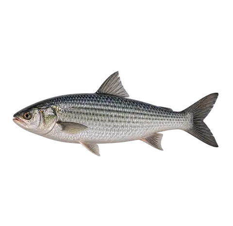
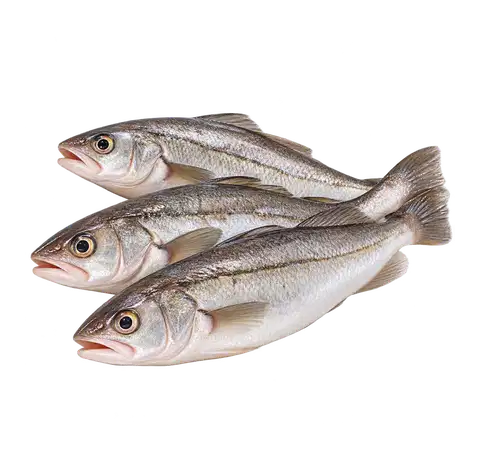
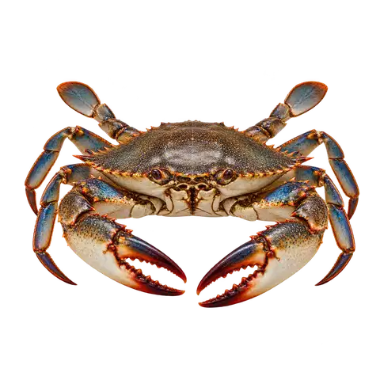
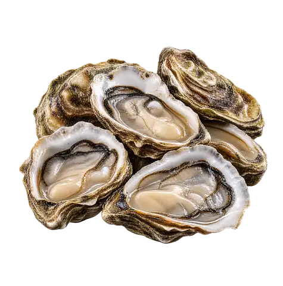

Pesca artesanal · Vitrine de pescados
Pescados da pesca artesanal.
Consulte os anúncios disponíveis e converse com o pescador. Você também pode registrar o pedido no site para acompanhar pela sua conta.
Vitrine de pescados
O que está disponível?
Carregando disponibilidade...
Guia visual de pescados
Conheça algumas espécies.
Representações digitais para facilitar o reconhecimento. Não são fotos de produtos à venda nem indicam estoque disponível.






Pescadores e clientes
Quer vender ou acompanhar seus pedidos?
O acesso é separado para quem anuncia pescados e para quem faz pedidos.